八、电位分析法 答案
一、选择题 ( 共53题 )
1. 2 分 (1122) (4) 2. 2 分 (1123) (4) 3. 2 分 (1124) (2)
4. 1 分 (1125) (1) 5. 2 分 (1126) (3) 6. 2 分 (1133) (1)
7. 2 分 (1134) (4) 8. 2 分 (1135) (1) 9. 2 分 (1136) (4)
10. 2 分 (1137) (4) 11. 2 分 (1138) (2) 12. 2 分 (1139) (1)
13. 2 分 (1140) (4) 14. 2 分 (1141) (3) 15. 1 分 (1143) (3)
16. 1 分 (1146) (4) 17. 2 分 (1147) (1) 18. 1 分 (1148) (3)
19. 2 分 (1156) (2) 20. 2 分 (1157) (1) 21. 2 分 (1158) (2)
22. 1 分 (1159) (2) 23. 1 分 (1171) (3) 24. 2 分 (1172) (2)
25. 2 分 (1219) (3) 26. 1 分 (1253) (1) 27. 2 分 (1255) (2)
28. 2 分 (1256) (3) 29. 1 分 (1906) (2) 30. 1 分 (1907) (1)
31. 1 分 (1908) (1) 32. 1 分 (1909) (4) 33. 1 分 (1910) (1)
34. 1 分 (1911) (3) 35. 1 分 (1912) (3) 36. 1 分 (1913) (2)
37. 2 分 (1942) (1) 38. 2 分 (1943) (3) 39. 2 分 (1944) (4)
40. 1 分 (1945) (4) 41. 2 分 (1946) (1) 42. 1 分 (1947) (2)
43. 1 分 (1948) (2) 44. 1 分 (1949) (1) 45. 2 分 (1950) (3)
46. 2 分 (1951) (3) 47. 2 分 (1952) (1) 48. 2 分 (1953) (3)
49. 2 分 (1954) (2) 50. 1 分 (1955) (4) 51. 2 分 (1956) (3)
52. 1 分 (1957) (2) 53. 2 分 (1958) (3)
二、填空题 ( 共79题 )
1. 2 分 (2010)
[答] 0.1
2. 2 分 (2031)
[答] (1) A 离子； (2) B 离子。
3. 2 分 (2035)
[答] Em = k
+ 0.0592 lg a 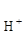
4. 2 分 (2039)
[答] Br-；Em=k- S lg a
5. 2 分 (2041)
[答] 离子交换的膜电位；阳性、阴性和中性载体。
6. 2 分 (2063)
[答] 1.06V (vs.SHE)
7. 2 分 (2064)
[答] 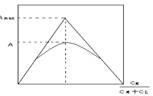
8. 2 分 (2073)
[答] Ag 电极
9. 2 分 (2075)
[答] 负方向移动
10. 2 分 (2086)
[答] 蒸馏水
11. 2 分 (2087)
[答] 氢离子
12. 2 分 (2088)
[答] K 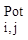 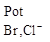
13. 2 分 (2111)
[答] 溶液的pH大于10, 强碱溶液中Na+浓度太高
14. 2 分 (2112)
[答] 铂
15. 2 分 (2113)
[答] K
16. 2 分 (2246)
[答] 阴极
17. 2 分 (2248)
[答] 还原反应
18. 2 分 (2249)
[答] H2,Cl2
19. 2 分 (2250)
[答] 氟离子电极
20. 2 分 (2251)
[答] 玻璃电极
21. 2 分 (2252)
[答] Ag电极
22. 2 分 (2257)
[答] 氢离子在膜上的交换作用
23. 2 分 (2843)
物质某一游离离子的量； 物质的总量。
24. 2 分 (2844)
相对误差＝Dc/ c×100%＝4ZDE； 小。
25. 2 分 (2845)
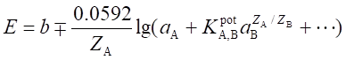
26. 5 分 (2846)
分别溶液法、混合溶液法；
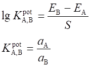
27. 2 分 (2847)
表达式：
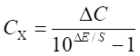
满足加入的标准溶液体积比试液体积约小100倍和标准溶液浓度比试液大约100倍。
28. 5 分 (2848)
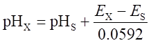
偏高； 酸差； 偏低； 碱差或钠差。
29. 5 分 (2849)
标准加入法； 电位滴定法；
是为了校正离子选择电极的斜率与Gran坐标纸规定的斜率之间的误差以及试剂的空白 值 。
30. 5 分 (2850)
总离子强度调节剂（TISAB）；
维持试样与标准试液有恒定的离子活度；
使试液在离子选择电极适合的pH范围内，避免H＋或OH－干扰；
使被测离子释放成为可检测的游离离子。
31. 2 分 (2892)
电极的平衡时间。
32. 2 分 (2893)
流动的；离开；自由通过；流动载体。
33. 2 分 (2894)
不对称电位和液接电位；级差斜率。
34. 2 分 (2895)
pH值大于10的碱性溶液或（钠离子）浓度较高的溶液中，测得的pH值比实际数值 偏低；测定强酸溶液，测得的pH值比实际数值偏高。
35. 2 分 (2896)
膜内阻、内充溶液和内参比电极的内阻等；输入阻抗。
36. 2 分 (2897)
A；B；抗干扰的能力越强。
37. 2 分 (2898)
电极响应曲线的线性范围的直线斜率；mV/pa
38. 2 分 (2899)
均相膜电极、流动载体电极；气敏电极、酶电极。
39. 2 分 (2900)
加速溶液与电极表面的离子达到平衡；减少浓差极化。
40. 2 分 (2901)
±4％； ±8％ 。
41. 2 分 (2902)
氢离子对膜的响应；玻璃内外膜的不对称；测量溶液和甘汞电极的饱和KCl溶液之间的。
42. 2 分 (2903)
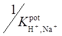
43. 2 分 (2904)
1.8×10－6。
44. 2 分 (2905)
1.2％～2.5％ 。
45. 2 分 (2906)
减低； 增大；减低。
46. 2 分 (2907)
大于8。
47. 2 分 (2908)
响应能力；干扰程度。
48. 2 分 (2909)
降低液接电位；正负离子的迁移数比较接近；电解质浓度比较大。
49. 2 分 (2910)
小； 高； 减小稀释效应。
50. 2 分 (2911)
拐点； 最高点； 为零的点。
51. 2 分 (2912)
不对称； 液接。
52. 2 分 (2913)
氟离子进入晶体表面的晶格缺陷面形成双电层结构。
53. 2 分 (2914)
指示； 参比。
54. 1 分 (2915)
500 。
55. 2 分 (2916)
离子强度调节液；pH缓冲液控制pH；消除干扰。
56. 2 分 (2917)
活化电极； 水化层。
57. 5 分 (2918)
电位分析法；伏安法；滴汞；极谱法；电导分析法；库仑分析法。
58. 1 分 (2919)
Pt电极。
59. 1 分 (2920)
Ag电极。
60. 1 分 (2921)
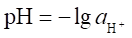
61. 2 分 (2922)
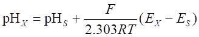
pHs是标准缓冲溶液的pH，Ex和Es分别为被测试液和标准缓冲溶液的电动势。
62. 2 分 (2923)
随待测离子浓度的变化，试液组成变化。
63. 2 分 (2924)
能扩散进入膜相的缺陷空穴； 也能进入溶液相。
64. 2 分 (2925)
被测气体；电池 。
65. 2 分 (2926)
1011Ω
66. 2 分 (2927)
不同离子；不同的迁移数。
67. 2 分 (2928)
E＝ E 1＝ E2。
68. 2 分 (2929)
迁移数；分配系数 ；分配系数。
69. 2 分 (2930)
阴离子；阳离子；中性载体。
70. 2 分 (2931)
Ag＋； 各自的溶度积Ksp。
71. 5 分 (2932)
扩散电位；强制；选择；Donnan。
72. 5 分 (2933)
F－； La3＋；Ag|AgCl；0.1mol/LNaCl和0.1mol/LNaF溶液。
73. 2 分 (2934)
分别溶液；混合溶液；混合溶液。
74. 2 分 (2935)
游离离子的； 总。
75. 2 分 (2936)
校正；干扰程度。
76. 5 分 (2937)
零电流；不存在；存在；加速离子的平衡。
77. 2 分 (2938)
待测试液；电动势 。
78. 2 分 (4529)
[答] 恒定试液pH、恒定离子强度和排除Fe3+的干扰。
79. 2 分 (4530)
[答] 加速电位响应的平衡, 越长.
三、计算题 ( 共50题 )
1. 10 分 (3003)
[答]
(1) 67.0×10-3 = k- 0.05915 lg0.100 ..........(1)
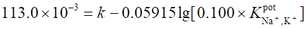
由 (2) - (1) 得 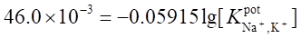
得 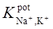
(2) E = 7.9×10-3 - 0.05915 lg(1.00×10-3 + 1.00×10-2×0.167)
= 7.9×10-3 = 0.152 = 0.160 V
2. 10 分 (3004)
[答]
(1) 0.3400 = k - 0.05915 lgcx
0.3100 = k - 0.05915 lg[(20.00cx + 0.0400)/24.00]
0.0300 = 0.05915 lg[(20.00cx + 0.0400)/24.00cx]
解得 cx = 7.00×10-4 mol/L
(2) 由于待测体积太小,仅 0.5 mL,用普通实验装置直接测量时有困难。可改用加入法 7.00×10-4mol/L高得多,故应先将标准溶液稀释至1.00×10-4mol/L或5.00×10-5mol/L。 先在稀释的标准溶液中测量电极的电位E1;然后移20.00mL此标准溶液至含0.5mL未知液的烧杯中,再测量一次氟电极的电位E2 。
E1= k - 0.05915 lgcs
E2= k - 0.05915 lg[(20.00cs+ 0.5cs)/20.50]
3. 10 分 (3005)
[答] E = 0.480 + 0.0592/2 lg[M 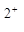
E = E 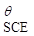
用[M 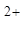
0.030 = 0.480 + 0.0592/2 lg[M 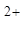
解得 [M 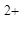
在计量点时, [M] = [X-] = [M]eq = 1.265×10-7
[MX+] = 4.00/100 - [M]eq ≈4.00×10-2
K = [MX+]/[M][X-] =4.00×10-2/(1.265×10-7)2 = 2.50×1012
4. 10 分 (3014)
[答] (1) 0.322 = 0.285 - 0 -0.0592 lg[H+]
-lg[H+] = 0.625 , [H+] = 0.237 mol/L (HCl溶液浓度)
(2) 1.096 = 0.285 - 0.0592 lgKw/[OH-]
lg[OH-] = 0.30 , [OH-] = 0.501 mol/L (NaOH 溶液浓度)
(3) 设100mL混合溶液中 HCl 的体积为x(mL),NaOH 的体积为y(mL)
则 x + y = 100 mL .. ................... ①
0.501 y - 0.237 x = 100z ................. ②
1.036 = 0.285- 0.0592 lgKw/[OH-]
lg[OH-] = - 1.314 , [OH-] = z = 4.853×10-2 mol/L
代入②式后,解①②之联立式得出 x = 61.3 mL , y = 38.7 mL
5. 10 分 (3015)
[答] (1) E (Cu+,Cu) = E θ(Cu+,Cu) + 0.0592 lg[Cu+]
Cu+ + Br- = CuBr [Cu+] = Ksp/[Br-]
E (Cu+,Cu) = E θ(Cu+,Cu) + 0.0592 lg(Ksp/[Br-])
则 E (CuBr,Cu) = 0.521 + 0.0592lg(5.9×10-5) = 0.0338 V(vs.NHE)
(2) Cu,CuBr┃Br- (xmol L-1)‖SCE
0.076 = 0.242 - 0.0338 - 0.0592pBr pBr = 2.23
6. 10 分 (3016)
[答] (1) 阳极 Ag + Ac- ─→AgAc(固) + e-
阴极 Cu + 2e- ─→ Cu
电池反应 2 Ag + 2Ac- + Cu ─→2AgAc(固) + Cu
(2) E (电池) = E (Cu,Cu) - E (Ag+,Ag)
= { E θ(Cu/Cu)+0.0592/2lg[Cu 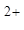
- 0.372=0.337+0.0592/2lg0.1 -0.799 -0.0592lgKsp+0.0592lg(0.1×2)
lgKsp= - 2.72 ∴ Ksp = 1.9×10-3
7. 10 分 (3018)
[答] E (玻) = E (膜) + E (内参) , E (膜) = E (外) - E (内)
E (玻) = E (外) - E (内) + E (Ag/AgCl) [Cl-] = 0.1 mol/L
E (Ag,AgCl)= E θ(Ag,AgCl)- 0.0592lg[Cl-]
= 0.22 - 0.0592 lg[10-1] = 0.279 (V)
E (外) - E (内)= 0.059 lg[a(F-,内)/a(F-,外)] , (计算时以浓度代替活度)
= 0.059lg(10-4/10-1)
E (玻) = 0.059lg(10-4/10-1)+ 0.279 = 0.102 V
E (电池) = 0.2445 V - 0.102 V = 0.143 V
8. 10 分 (3020)
[答] 0.1955 = k - 0.05915/2 lg(0.0100×0.55)
0.1892 = k
- 0.05915/2 lg[0.0100×0.51 + K 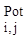
0.1754 = k - 0.05915/2 lg[a(Ca) + K(0.0120)2]
解得 K = 56.54 a(Ca)= 0.0182mol/L
9. 10 分 (3022)
[答] 配合反应式 Ag+ + 2 CN-= Ag(CN)-2
K(不) = [Ag+][CN-]2/[Ag(CN)2-] = 3.8×10-19
计量点时, 2[Ag+] = [CN-] [Ag+] = {K(不)×[Ag(CN)2-]/4}1/3
2个CN-才能生成1个Ag(CN)2-,计量点时的体积为原体积的三倍,忽略配合物的离解,配合物浓度为 [Ag(CN)2-] = 3.33×10-3 mol/L
则 [Ag+] = [K(不)×3.33×10-3/4]1/3 = 6.81×10-8 mol/L
故E (Ag) = E θ(Ag+/Ag) + 0.059lg(6.81×10-8) = 0.377 V
E (电池) = E (Ag) - E (甘) = 0.377 - 0.2445 = 0.133 V
10. 10 分 (3023)
[答] (1) 先求出电极响应斜率
S = (E2 - E1)/lg2 = ( - 96.1 + 78.3)/0.3010 = - 59.1 mV
(2) 求出试液 NH4+浓度 cx
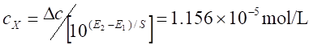
c(NH4+) = 1.156×10-5×18.04×103 = 0.209×10-6
11. 5 分 (3027)
[答] 设计的 pH 计：偏转一个 pH ，电位改变 60mV。现用电极的响应：偏转一个 pH, 电位改变 50mV。(60-50)/60 = 0.167 ，即测定时每偏转 1 个 pH ，则有 0.167 pH 的误差 测得结果的相对误差为: 0.167/3.00 × 100 % = + 5.6 %。
12. 10 分 (3029)
[答] (1) 0.316 = 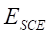 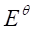
0.302 = - (-0.0591lg[cx])
lg[cx] = -3.602 - 0.2369 = -3.839
[cx] = 4.3 × 10-4 mol/L
(2) K = [Cl-]/[OH-] = 0.001
(1.449×10-4×0.2%)/[OH-] = 0.001
[OH-] = (1.449×10-4×0.2)/0.001 = 2.898×10-4 , pOH = 3.54
pH = 14 - 3.54 = 10.46
溶液的 pH 值不得超过 10.46。
13. 5 分 (3030)
[答] (1) 应用 Pt 作指示电极
Pt｜I2,I-(1.0×10-4mol/L) ºSHE
E = E (SHE) - (+(0.0591/2)lg(I2/[I-]2)
= -0.621 + 0.0591lg(1.0×10-4) - (0.0591/2)lg[I2]
2[E (池) + 0.857]
pI2 = ─────────
0.0591
(2) 应用 Ag 作指示电极
Ag ,Ag2C2O4 ｜ C2O º SHE
E = E (SHE) - {+ 0.0591lg(Ksp/[C2O])1/2}
= 0-0.799-(0.0591/2)lgKsp+(0.0591/2)lg[C2O 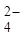
= - 0.799 + 0.309 + (0.0591/2)lg[C2O]
= - 0.490 + (0.0591/2)lg[C2O]
2(-E (池)-0.490)
pC2O4= ─────────
0.0591
14. 10 分 (3034)
[答] c1V1 = c2V2 0.1×V1 = 0.1×50 V1 = 50 mL
计量点时，Ce(Ⅳ) 用去 50 mL
延迟 2s ，即 Ce(Ⅳ) 过量；2×0.1 = 0.2 mL
百分误差为：(0.2/50)×100% = 0.4%
计量点后 Ce(Ⅳ) 过量
0.0591 [Ce 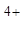
E = + ──── lg ────
1 [Ce 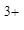
[Ce] = (0.2×0.1)/100.2 = 1.996 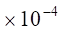
[Ce] = (0.1×50)/100.2 = 0.0499 mol/L
E = 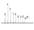
= 1.28 + 0.0591lg0.004 = 1.138 V
15. 10 分 (3035)
[答] E1 = E (SCE) - ( + 0.059/2 ・lg(1.5×10-4)
E2 = E (SCE) - ( + 0.059/2 ・lgx)
(0.113 - 0.593 )×2
─────────── = lgx + lg(1.5×10-4)
0.059
x = 5.53 × 10-13 mol/L
[Cu2+][NH3]4 [5.53×10-13][0.1]4
K(不稳) = ──────── = ────────── = 4.61×10-13
[Cu(NH3) 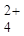
────────
25
16. 10 分 (3036)
[答] MnO + 4H+ + 3e- MnO2 + 2H2O E = 1.695 V
MnO2 + 4H+ + 2e- Mn 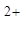
E 1= E + (0.0591/3)lg[MnO][H+]4 (1)
E 2= E + (0.0591/2)lg[H+]4/[Mn] (2)
6计量点时 E = E 1= E 2
[MnO] 3
────── = ───
[Mn] 2
(1)×3+(2)×2:
[MnO][H+]8
5 E = 3 E + E + 0.0591 lg ────────
[Mn]
3×1.695 + 2×1.23 + 0.0591lg(3/2)×10
E = ───────────────────── = 0.75 V (vs. SCE)
5
E (控) = 0.75 - 0.24 = 0.51 V
17. 5 分 (3037)
[答] G= k×A/l , k = G・A/l = 0.55×10-4×0.069 = 3.795×10-6 S/cm
k 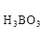
1000 1.795×106×1000
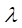
c 0.04
��= 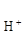
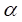
(0.04)
Ki = ----------- = 5.6×10-10
0.04(1-)
18. 5 分 (3038)
[答] 1. Pt｜H2 ( 101325Pa ) , HCl (x mol/L) º KCl ( 1 mol/L ) , Hg2Cl2｜Hg
2. E = E (右) - E (左) = E (NCE) - E (H+/H2)
��(H+/H2) = E(NCE) - E = - 0.12
= E (H+/H2) + 0.0592lg([H+]/pH2) = 0.0592lg[H+]
lg[H+] = - 0.12/0.0592 = - 2.0 , [H+ ] = 1.0×10-2 mol/L
含 HCl 的质量 m= 3.7 g
19. 5 分 (3041)
[答] 1. 选用 KNO3时
1×10-4×5
[KNO3] = ─────── = 0.5 mol/L
1×10-5×100
2. 选用 K2SO4 时
1×10-4×5
[K2SO4 ] = ( ─────── ) = 0.01 mol/L
5×10-5×100
20. 5 分 (3042)
[答] 设待测试液体积为 Vx ，浓度为 cx，测得电位为 E 1；加入浓度 cs体积为 Vs 的标准溶液，又测得电位为 E 2。由题可知:
E 1 = b - Slgf・cx (1)
Vs・cs + Vx・cx
E 2 = b - Slgf’─────────── (2)
Vs + Vx
f’(Vs・cs + Vx・cx)
式 (1) - (2) 得 E 1 - E 2 = Slg ──────────────
f ( Vs + Vx)cx
假定 f = f’ ，则
Vs・cs
cx = ────────────────
( Vs + Vx)・10 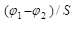
当 Vx 》 Vs 时
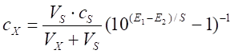
21. 5 分 (3043)
[答] 平衡时 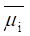 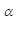 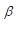
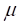 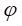 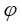 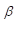
= - = (i0 - i0)/ZiF + (RT/ZiF)ln(ai/ai)
22. 10 分 (3045)
在 pH = 6 的溶液中，CrO 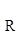
Ka1Ka2
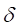
[H+]2 + Ka1[H+] + Ka1Ka2
CrO 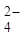
( ・c )1/2 ・ K = 9.8×10-5 mol/L
9.8×10-5
E r= ────── ×100% = 19.6% ≈ 20%
5×10-4
23. 10 分 (3046)
E = E (内参) + E (膜)
�� E (内参) = Eθ - 0.0591 lg[Cl-]内= + 0.281 V
[F-]内
E (膜) = 0.0591lg ──────────── = + 0.100 V
[F-] + [OH-] K
E = + 0.281 + 0.100 = + 0.381 V
24. 10 分 (3047)
[答] E s = E (内参) + E (膜) (1)
E (内参) = E + 0.059 lg[Ag+]内 (2)
0.059 [S 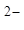
��E (膜) = ─── lg ──── (3)
2 [S]外
式 (2) 和 (3) 代入式 (1) 得
0.059 0.059
E s = E ────lg[S]外 + ─── lgKsp = - 0.52 V
2 2
25. 5 分 (3048)
[答] E = E - 0.058 pH
+ 0.0435 = E - 0.058×5 (1)
+ 0.0145 = E 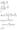
解 (1) 和 (2) 式 则 pH = 5.5
26. 10 分 (3049)
[答] HgY 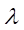
0.059 [HgY]
E 1 = + ──── lg ─────
2 [Y]
Hg + 2e- = Hg
0.059
E 2 = + ──── lg[Hg]
2
[HgY]
K = ───────
[Hg][Y]
E 1 应等于 E 2，可得
0.059 [HgY]
─── lg ────── = -
2 [Hg][Y]
lg K = 21.5
27. 10 分 (3057)
[答] pNa = 3 则 [Na+] = 10-3 mol/L
（因题目条件没有指明离子强度缓冲调节剂，故可以理解为浓度）这一浓度的 3% 为：
Δ [Na+] = 10-3×3% = 3×10-5 mol/L
Na+, H+ 同为一价离子，故
则 [H+] = 10-6 mol・L-1
即 pH = 6
[答] 为使测量误差小于 3%， 试液之 pH 值必须大于 6。
28. 10 分 (3130)
[答] E = E - 0.060 lg[I-]
滴定开始时:
E = - 0.152 - 0.060lg5×10-3 = -0.0139 V
E = - E = +0.244 - (-0.0139) = 0.258 V
SCE 为正极，碘电极为负极。
计量点时
E = -0.152 - 0.060lg(9.3×10 )1/2 = +0.329 V
E = E - = 0.329 - 0.244 = 0.085 V
SCE 为负极，碘电极为正极。
29. 5 分 (3554)
待测试液；电动势 。
30. 5 分 (3558)
31. 5 分 (3559)
32. 10 分 (3560)
33. 5 分 (3561)
34. 5 分 (3562)
35. 5 分 (3563)
36. 5 分 (3564)
37. 5 分 (3565)
38. 5 分 (3566)
39. 5 分 (3567)
40. 5 分 (3568)
41. 5 分 (3569)
42. 5 分 (3570)
43. 5 分 (3571)
pH应控制在大于6。
44. 5 分 (3572)
误差为6.0%
45. 5 分 (3573)
根据标准加入法公式：
46. 5 分 (3574)
根据：
47. 10 分 (3575)
终点时：
终点时电位：
终点时电位计读数=0.511-0.242=0.269V (vs.SCE)
48. 10 分 (3576)
（1）电池：
wz=未知。
（2）饱和甘汞电极是参比电极，Ag电极是指示电极。盐桥的作用是
消去液接电位并构成通路，盐桥内可充KNO3、KCl等电解质，在这里应为前者。
（3）
49. 10 分 (3577)

（2）根据
误差％
50. 10 分 (3580)
待补充
四、问答题 ( 共28题 )
1. 5 分 (3044)
对 Ag+ 涂 Ag2S 通用电极可构成下列电池
Ⅱ ’ I
L ｜ Ag ｜Ag+ (ａAg)’｜ AgS ｜ C ｜ L
在平衡时 eII - e , I = e - e
对平衡反应 Ag Ag+ + e-
故 F(EⅠ - EⅡ) = -
这样 △E = 0 所以此通用电极的电极电势与 Ag/Ag+ 电极相同
2. 5 分 (4079)
[答]
1. 使用前将橡皮帽及侧管口橡皮塞取下，管内应充满饱和 KCl 溶液，且有少许
KCl 晶体存在，并注意随时补充 KCl 溶液。
2. 不能将甘汞电极长时间浸在待测液中，以免渗出的 KCl 污染待测溶液。
3. 检查电极是否导通。
4. 用完后洗净，塞好侧管口及橡皮帽，以防止 KCl 溶液渗出管外，将甘汞电极
浸泡在饱和KCl 溶液里。
3. 5 分 (4080)
[答] 电池的电动势是指电池没有电流通过时两端的端电压，当用一般的电压表来测量时，由于电池中有电流通过，而电池有内阻，这就产生电压降 (E - iR = U ) 此时用电压表测得的仅仅是端电压 U 。另外，由于电流通过电池，在电池两电极上发生电化学反应，产生极化现象，也将影响电动势的准确测量。 所以不能用一般的电压表来测量电池的电动势，而应用电位差计，利用补偿法原理 (使 i = 0 ) 来测之。
4. 5 分 (4081)
[答] (1) 酸碱中和 ─ 玻璃电极
因为达计量点时, 氢离子浓度发生大幅度变化, 而玻璃电极能
响应氢离子浓度的变化.
(2) 氧化还原 ─ Ｐt 电极
Ｐt 是一种性质稳定的惰性金属，本身并不参与反应，但它作为
一个导体，是物质氧化态和还原态交换电子的场所，通过它可
显示溶液中氧化还原体系的平衡电势。
(3) 配合滴定 ─ 根据不同的配合反应来选择电极，例如用 Hg(NO3)2滴定氰化
物，生成 Hg(CN) 配离子，滴定过程中 Hg 的浓度发生变
化，所以可用 Hg 电极作指示电极，此外也可用 pM 电极为指
示电极。
(4) 沉淀滴定 -- 根据不同的沉淀反应来选择，如用 AgNO3滴定 Cl-、Br-、I-
时，可用银作指示电极。
5. 5 分 (4087)
[答] 使用标准加入法计算公式计算时必须知道该电极 Nernst 响应的实际斜率 S。 不用作标准曲线，求算实际斜率的实验方法是，在完成试样的测定后，此时 E = b + S lgf・cx，用空白溶液将试液稀释 1 倍，此时 E ' = b + S lg(fcx)/2，因此可按下试计算实际斜率：
S = (E - E ')/lg2
6. 5 分 (4088)
[答] 为了使晶体膜内电位和内参比电极电位稳定，内充溶液应含有晶体膜的敏感离子和内参比电极响应离子。 LaF3单晶膜氟离子选择性电极的内充溶液中应含 F- 和 Cl-，如 0.1 mol/L NaF + 0.1 mol/L NaCl 溶液。
7. 5 分 (4089)
[答]
1. pH 玻璃电极 │ 待测溶液 ( c = x ) 饱和甘汞电极。
2. 测量前必须进行“温度补偿”和“定位校准”。“温度补偿”调节的目的是校
准 Nernst 方程中的系数。 2.303 RT/ZF，使仪器读数的每一 pH 值相当于
59.2 mV。“定位校准”调节的目的是校准 Nernst 方程中的常数项 b(E ),
使仪器读数直接指示待测溶液中的 pH 值。
8. 5 分 (4093)
[答] E (',') 和 E (,) 为 Donnan (道南 ) 电位 , E (',) 为扩散电位
9. 5 分 (4095)
[答]
方法 测定物理量 定量分析的理论公式
电位分析法 E E = E θ+ RT/ZiF ×ln f0c0/fc
电重量分析法 m c = m/MV
库仑分析法 Q c = Q/nFV
库仑滴定法 i1t m = Miit/nF
直流极谱法 id id(A) = 607×nD1/2mtc
10. 5 分 (4098)
[答] 这种说法不对。因为：
阳极和阴极，正极和负极是两个不同的概念，前者是按电极上的反应来区分电极的，后者是按电位的正负来区分电极的。
原电池在放电时，一个电极的电位总是正一些，电位比较正的电极叫正极，另一个电极的电位比较负一些，叫负极。就电极反应来说，把发生氧化反应的电极叫阳极,发生还原反应的电极叫阴极。因此，原电池在放电时，正极上发生的是还原反应应叫阴极，负极上发生氧化反应，应叫阳极。
11. 5 分 (4099)
[答] 在一般碱性溶液中，含有氢氧化钠，由于溶液的碱性较强，氢离子浓度很低，而较大量钠离子的存在，将使钠离子重新进入玻璃膜表面的硅酸骨架，并与氢离子交换而占有少部分点位，因此，玻璃电极的膜电位除了决定于水化胶层和溶液中的氢离子活度外，还增加了同钠离子在两相中扩散而产生的相界电位。
12. 5 分 (4112)
[答] A. 电导----------电导法
B. 电流-----------极谱和伏安法
C. 电位-----------电位法
D. 电量-----------库仑法
13. 5 分 (4113)
[答] 1. 甘汞电极： Hg│Hg2Cl2, Cl-（饱和，1mol/L 或 0.1 mol/L）
电极电位决定于 Cl- 的浓度。
E = E θ- RT/F×ln a
常用的是饱和甘汞电极，在 25℃ 时其电位为 0.2415 V，（vs.SHE）
2. Ag - AgCl 电极： Ag│AgCl, Cl-（饱和， 1 mol/L）
电极电位决定于 Cl-浓度
E = E θ- RT/F×ln a
常用的是以饱和 KCl 为内充液, 在 25℃ 其电极电位为 0.1998 V (vs.SHE)
14. 5 分 (4114)
[答]: 在电解到达终点之前，溶液中有 As(Ⅲ)/As(V)，因为它是不可逆电对，因此在指示电极上外加一个小电压 (50～100 mV) 时不产生电流。当到达电解终点时，溶液中出现2I-/I2可逆电对，因此在指示电极上产生电流。故指示电极上电流与电解时间的关系为：(如图)
 转折点即为电解终点。
转折点即为电解终点。
15. 5 分 (4115)
[答] OH-有干扰，因为 OH-与 F-的离子半径相近，所带电荷相同，因此能进入LaF3晶格参与 F-的响应。Al(III)、Fe(III) 也产生阳离子干扰，它们均能与 F-配合, 降低了 F-的有效浓度。
TISAB 的作用是：1. 控制溶液的离子强度，维持活度系数恒定。
2. 掩蔽干扰离子。
3. 控制溶的 pH 值。
16. 5 分 (4662)
离子计的输入阻抗应比测量电池的内阻高1000倍以上；
离子计的输入阻抗R入上的电压降即仪器的读数：
V＝i R入 （1）
电池电动势E＝i(R内+R入) （2）
合并（1）和（2）式：。V/E=R入/(R内+R入)，当R入＝1000R内时，E≈V。
17. 5 分 (4663)
电池电动势的能斯特方程：
(25℃)
E为电池电动势（V）；b为内外参比电极电位差；zA，zＢ等为主离子、干扰离子电荷数；aA，aB等为主离子、干扰离子活度； 或 为电位选择系数，它表明A离子选择电极抗B（或C）离子抗干扰能力的大小。“＋”对阴离子选择电极，“－”对阳离子选择电极。
18. 5 分 (4664)
根据1976年IUPAC推荐，通常离子选择电极可以分为两大类：（1）原电极（2）敏化离子选择电极，它们又可分为若干种。例如用单晶膜的氟离子选择电极属原电极。
19. 5 分 (4671)
Donnan电位，是指离子的扩散带有选择性，只有某些离子能通过界面，其结果造成电荷的分离，而形成的电位。库仑力的作用能改变离子通过界面的速度，形成稳定的电位差值 。
20. 5 分 (4672)
正、负离子由于扩散，自由通过界面的速度不同，引起电荷的分离，而产生的界面电位差，称为扩散电位。电荷 的分离，库仑力的作用能改变离子通过界面的速度，形成稳定的电位差值 。
21. 5 分 (4673)
石英是纯的SiO2，它没有可供离子交换的电荷点（定域体），所以没有响应离子的功能。 当加入碱金属的氧化物成为玻璃后，部分硅－氧键断裂，生成固定的带负电荷的骨架，形成载体，抗衡离子H＋可以在其中活动。
22. 5 分 (4674)
电解质的正负离子迁移数相等，减少界面电荷分离程度。
电解质的浓度较大，离子迁移量主要由盐桥的电解质向试液移动。
23. 5 分 (4675)
校准曲线法，需配制一系列组成与试液相似的标准溶液，使它和试液有相近的总离子强 度及活度系数，绘制校准曲线，通过比较确定含量。它适用于大批试样，试样组成差异 较小的试样分析。
24. 5 分 (4676)
标准加入法是通过测量已知体积的试液和加入量较少但定量的标准溶液后的试液。它们 具有相近的总离子强度和活度系数，将测量值根据电位与浓度的基本公式计算，求得含 量。它适用于组成较为复杂，份数不多的试样分析。
25. 5 分 (4677)
不对称电位是玻璃模内外物理化学性质不同引起的，如：
半径不同，内外表面应力不同；
内外表面化学腐蚀与沾污不同；
内外膜浸泡水的时间不等，吸水量不同也会造成差异。
26. 5 分 (4678)
氟含量可采用加入TISAB溶液的校准曲线法求得。游离氟也可以用校准曲线法，但加入TISAB 时，不加入柠檬酸钾这类配合剂、释放剂，pH也维持原来的情况。
27. 5 分 (4679)
气敏电极能测定某种气体的含量，是因为该气体通过透气膜进入中介液，可由指示电极和参比电极组成的电池的电动势来测量其变化，所以气敏电极从构造上讲，它已经是电池了。
28. 5 分 (4680)
直接电位测量的是电极构成的电池的电动势，它与离子活度（或浓度）关系式是Nernst 方程式。
(25℃)
故与离子的Z有关。